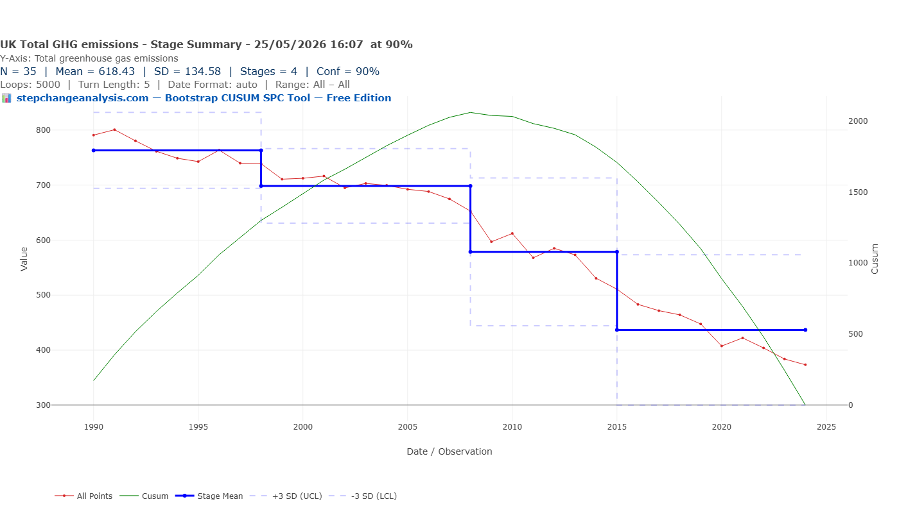
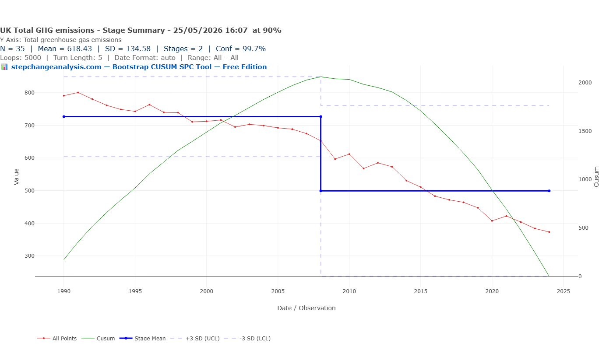
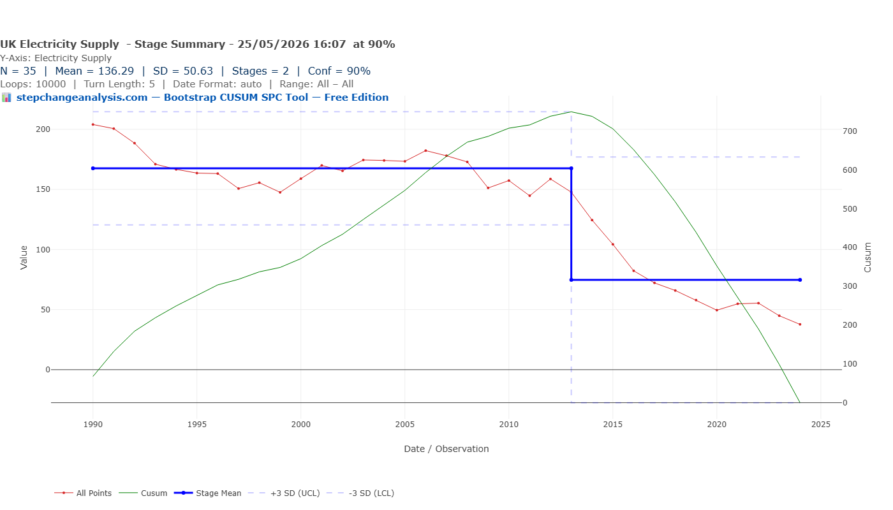
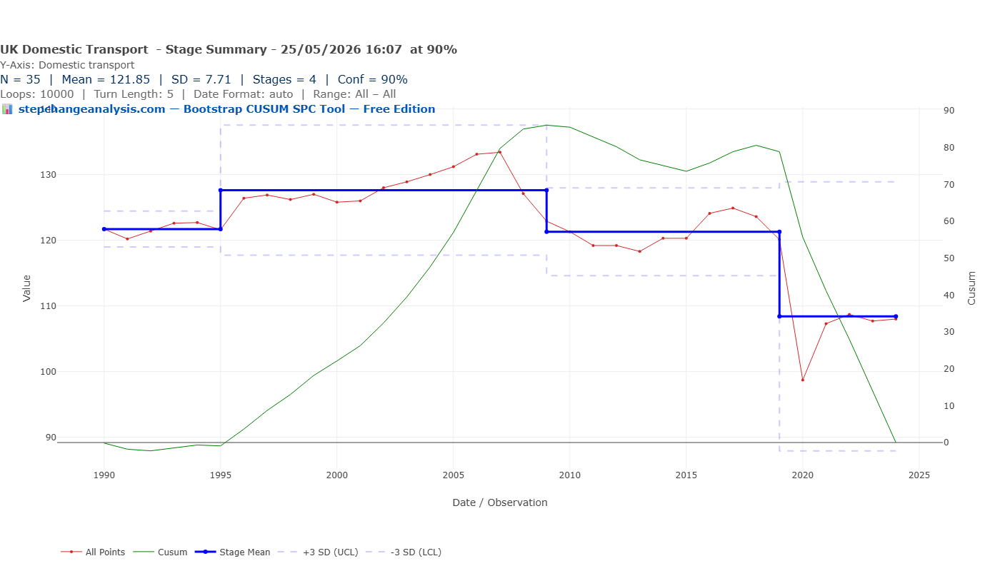
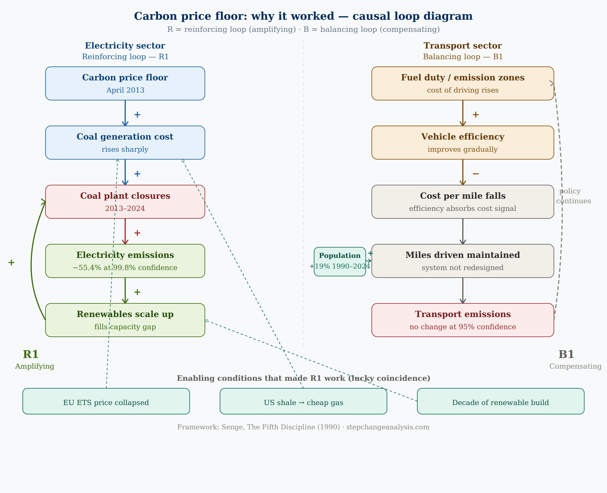
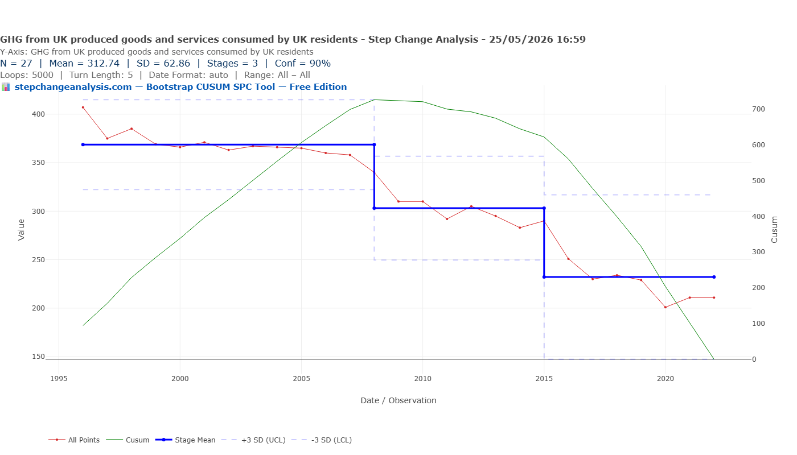

The Grid Fixed Itself. Transport Didn’t.
In his 2011 Budget, George Osborne announced the carbon price floor. It was not presented as a historic climate intervention — it was a Treasury revenue mechanism, taking effect April 2013. In the 23 years before it, no climate policy had produced a detectable structural change in UK electricity supply emissions. In the 11 years since, electricity supply emissions fell 55.4% at 99.8% statistical confidence. Bootstrap CUSUM on 35 years of DESNZ data finds three structural causes for the UK’s 53% emissions reduction — and domestic transport, 30% of all emissions, shows no statistically significant structural change at 95% confidence across 34 years. But the policies that may transform transport are still within the lag window. The CUSUM cannot yet say they have failed.
Same Data, Three Charts, Three Very Different Stories explains what the green CUSUM line means and why it detects structural change that other charts miss — including a step-by-step guide to reading the chart. Takes 5 minutes and makes every chart in this article easier to read.
Read above first 📚 Glossary — CUSUM, Deming, Meadows, Joiner, PDSA and more☰ Table of Contents — click to expand or collapse
- The policy that worked — and why timing matters
- The government’s claim and the CUSUM question
- Total emissions: four stages, three causes
- Electricity supply: 23 years of stagnation, then one policy changed everything
- Domestic transport: 34 years, no structural change at 95% confidence
- Why did transport policies fail? Four precise reasons
- The consumption comparison: what UK residents actually cause
- Three series, one story
- Three frameworks, one lesson: why the level of intervention determines the result
- What should a government actually do?
- A note on the data and its limitations
The policy that worked — and why timing matters
In his March 2011 Budget speech, George Osborne announced the carbon price floor — a minimum price for carbon in electricity generation, taking effect April 2013. It was not primarily marketed as a climate policy. Environmental groups gave it a cautious welcome. The electricity industry objected. Osborne called himself a low-tax Conservative. The mechanism was principally a revenue instrument designed to support the EU Emissions Trading Scheme — a Europe-wide carbon market where electricity generators bought permits to emit CO2, but whose price had collapsed far below the level needed to make coal uneconomical.
Bootstrap CUSUM on UK electricity supply emissions 1990–2024 finds that nothing before April 2013 produced a detectable structural change across 23 years of climate policy. In the decade after, electricity supply emissions fell 55.4% at 99.8% confidence — the strongest statistical signal in the entire dataset. The most effective climate policy in 35 years of UK emissions data was introduced by a Chancellor who wasn’t primarily thinking about climate. It worked because it changed the economics of an entire system rather than asking individuals to change their behaviour.
Before drawing any conclusions from Bootstrap CUSUM applied to emissions data, one principle must be stated clearly: there is always a lag between a policy taking effect and any detectable outcome in the data. For the carbon price floor, the lag was short — roughly two years from announcement to structural change — because the mechanism worked through economics. Coal plant operators didn’t need new equipment or new habits. The price signal changed and closures followed within months. But for policies that work through behaviour, infrastructure, or fleet turnover — the kind that dominate transport policy — the lag is measured in years or decades. A policy announced in 2020 should not be expected to produce a detectable Bootstrap CUSUM change point until the mid-to-late 2020s at the earliest.
This caveat applies throughout this article. The transport null result — no structural change at 95% confidence across 34 years — reflects the pre-EV policy era. The policies that may genuinely transform transport — the 2030 petrol and diesel ban, EV mandates, charging infrastructure investment — are still within the lag window. The CUSUM cannot yet say they have failed. What it can say is that nothing before them has structurally moved the sector in 34 years of data.
The government’s claim and the CUSUM question
The UK government’s official position is straightforward: greenhouse gas emissions from within UK borders have fallen 53% since 1990, demonstrating that climate policy works and that the UK is a world leader in decarbonisation. The trajectory is presented as evidence of steady, broad-based progress across the economy over three and a half decades.
📊 Two measures used in this article: Emissions from within UK borders (sometimes called territorial emissions) count all greenhouse gases physically released in the UK — from power stations, factories, vehicles, and farms — regardless of whether the goods produced are consumed here or exported. Consumption-based emissions count all the carbon caused by what UK residents consume, wherever in the world that carbon was actually released — including the embedded emissions in goods we import. The difference between the two measures reveals how much of the UK’s reduction reflects genuine decarbonisation versus production shifting abroad. · ⇣ Download the data CSV
Bootstrap CUSUM asks a different question. Not how much have emissions fallen, but when did they structurally change — and is the timing consistent with the causes being claimed? A policy that produces a genuine structural change will show a detectable change point dated to around the time of implementation, allowing for the expected lag. A change driven by economic shock, fuel switching, or offshoring will show a change point dated to those events instead.
Applied to 35 years of DESNZ emissions data, Bootstrap CUSUM identifies four structural stages with three different causes. Those three causes are: energy market liberalisation (1998) — coal replaced by gas as privatised electricity markets drove fuel switching, predating serious climate policy; the global financial crisis (2008) — UK GDP fell 4.2%, heavy industry contracted, the Climate Change Act passed the same year but the change point predates it; and coal phase-out driven by the carbon price floor (2015) — the first genuinely policy-driven structural stage, arriving 25 years after the 1990 baseline. The largest remaining sector — domestic transport at 30% of all emissions — shows no statistically significant structural change at 95% confidence across the pre-EV policy era.
📊 Data note: Analysis uses DESNZ Final UK Territorial Greenhouse Gas Emissions statistics, 1990–2024, N=35 annual observations. Sector data from Table 1.2. Consumption-based (footprint) emissions from DEFRA UK Carbon Footprint publication, 1996–2022, N=27. Bootstrap CUSUM, Loops=5000, Turn Length=5. gov.uk/government/statistics/final-uk-greenhouse-gas-emissions-statistics-1990-to-2024
Total emissions: four stages, three causes
The chart below shows total UK greenhouse gas emissions from within UK borders 1990–2024 with Bootstrap CUSUM at 90% confidence, 5000 loops. Four structural stages emerge.


| Stage | Period | Mean MtCO2e | Change | Confidence | Primary cause |
|---|---|---|---|---|---|
| 1 | 1990–1998 | 762.96 | Baseline | Baseline | Post-war industrial baseline. Early 1990s recession produces a small dip but no structural break. |
| 2 | 1998–2008 | 698.50 | −8.4% | 95.46% | Dash for gas. Coal replaced by natural gas in power generation, driven by energy market liberalisation under privatised electricity markets. The Kyoto Protocol was signed in 1997 but this change point predates serious policy implementation. Energy economics, not climate policy. |
| 3 | 2008–2015 | 578.61 | −17.2% | 93.88% | Global financial crisis. UK GDP fell 4.2% in 2008–09. Heavy industry contracted. Manufacturing output collapsed. The Climate Change Act received Royal Assent in November 2008 — but the CUSUM change point dates to the beginning of that year, before the Act passed. Economic shock, not legislation, is the primary driver of this stage. |
| 4 | 2015–2024 | 436.83 | −24.5% | 93.88% | Climate policy working. The coal phase-out accelerated from 2015 as carbon costs made coal generation uneconomical. Offshore wind scaled dramatically. The Paris Agreement was signed in 2015. The last coal power station closed September 2024. This is the first stage change that is primarily attributable to climate policy — but it took 25 years from 1990 to get here. |
Electricity supply: 23 years of stagnation, then one policy changed everything
The electricity supply sector tells the most striking story in the dataset. Isolated from the aggregate, Bootstrap CUSUM finds not four stages but two — and the contrast between them is extraordinary.

| Stage | Period | Mean MtCO2e | Change | Confidence |
|---|---|---|---|---|
| 1 | 1990–2013 | 167.53 | Baseline | Baseline |
| 2 | 2013–2024 | 74.76 | −55.4% | 99.8% |
The renewables that were waiting for the signal
The wind turbines and solar installations now visible across the UK were building capacity throughout the 2000s under the Renewables Obligation (2002). But they were operating alongside coal rather than replacing it — aggregate electricity emissions remained stubbornly flat as renewable generation grew. The carbon price floor triggered the coal closures that allowed renewables to take their place. The Stage 2 change point at 2013 captures both effects simultaneously: the exit of coal and the scaling of renewables that had been building for a decade. Neither alone would have produced the structural break the CUSUM detects. The renewables were necessary but not sufficient. The price signal was the trigger that allowed a decade of renewable investment to translate into a structural emissions reduction.
🍀 A lucky unintended consequence — and what systems thinking says about it
The carbon price floor was not designed to close coal power stations. It was a Treasury revenue mechanism intended to support investment certainty in the carbon market and top up the ailing EU Emissions Trading Scheme price. Osborne’s framing was fiscal, not environmental. The coal closures were, in a meaningful sense, an unintended consequence.
But it was a positive unintended consequence — and systems thinking explains why. Most well-intentioned policy interventions produce negative unintended consequences through two mechanisms Peter Senge identifies in The Fifth Discipline:
Time delays — a significant lag between an action and its full impact makes it hard to link negative outcomes to the original fix. The carbon price floor had the opposite problem: its time delay was shorter than expected, because the price signal worked through existing market mechanisms that responded within months.
Policy resistance — well-intentioned solutions are often absorbed by the system, triggering compensating feedback loops that defeat the solution. The classic example is building more roads to reduce congestion: more roads induce more traffic, congestion returns. The carbon price floor avoided this because it worked with the market feedback loop rather than against it. It didn’t try to suppress behaviour — it changed the price signal that generators were already responding to. The compensating feedback loop ran in the desired direction: coal became expensive, gas and renewables filled the gap, further reducing the cost advantage of fossil fuel generation.
Three coincidental conditions made the positive unintended consequence possible. The EU ETS price had collapsed — making the CPS top-up large enough to genuinely bite. US shale gas had reduced gas prices — making gas immediately competitive with coal once carbon costs were added. And offshore wind had scaled to the point where it could fill capacity gaps rapidly. If any of these had been different — expensive gas, a recovered EU ETS, insufficient renewable capacity — the carbon price floor might have raised electricity prices without triggering coal closures. The unintended consequence required the right system conditions to already be present.
Transport policy faces the opposite problem. Fuel duty — the equivalent mechanism for transport — raises the cost of driving but does not change the underlying system that makes driving necessary: inadequate public transport, housing distant from employment, road infrastructure designed for cars. The system absorbs the intervention through compensating feedback loops: people economise elsewhere, buy more fuel-efficient vehicles, but keep driving. The Bootstrap CUSUM shows the result — 34 years of marginal signals below 95% confidence.
The carbon price floor was introduced in April 2013 — a minimum price for carbon in the electricity generation sector that immediately changed the economics of coal. Coal plants that had been marginally profitable became structurally unviable. Closures accelerated. Gas and renewables filled the gap. The Stage 2 mean of 74.76 MtCO2e represents an 11-year average that includes values falling all the way to approximately 38 MtCO2e in 2024 — an 82% reduction from the 1990 starting point of 204 MtCO2e.
The important lesson is not just that the policy worked — it is that it worked because it changed the economics of the system rather than the behaviour of individuals. No one was asked to use less electricity. No awareness campaigns were run. The fuel source changed because the price signal made one option uneconomical. This is Layer 1 system change: the mechanism was redesigned so the desired outcome became the economically rational choice. Every electricity generator in the country responded to the same signal simultaneously.
The 23 years of near-zero structural progress from 1990 to 2013 is equally important. The Kyoto targets, the Renewables Obligation, the Climate Change Act — none of these produced a detectable structural change point in electricity supply emissions. The system did not change until the economics changed.
Domestic transport: 34 years, no structural change at 95% confidence
Domestic transport is now the largest single emitting sector in the UK, responsible for approximately 30% of all territorial emissions in 2024. It is also the sector most directly connected to the daily lives of every UK resident. Bootstrap CUSUM applied to domestic transport emissions tells a very different story from electricity.

| Stage | Period | Mean MtCO2e | Change | Confidence |
|---|---|---|---|---|
| 1 | 1990–1995 | 121.70 | Baseline | Baseline |
| 2 | 1995–2009 | 127.63 | +4.9% | 93.24% |
| 3 | 2009–2019 | 121.29 | −5.0% | 91.85% |
| 4 | 2019–2024 | 108.42 | −10.6% | 91.85% |
⏳ What the CUSUM cannot yet tell us about transport
The 34-year null result covers the pre-EV policy era. The policies with genuine potential to transform transport structurally — the original 2030 petrol and diesel sales ban (announced 2020), mandatory EV charging infrastructure, ZEV mandates for manufacturers — are all within the expected lag window.
Fleet turnover takes 10–15 years. A policy announced in 2020 changes new vehicle sales immediately but only begins to affect the aggregate emissions of 35 million vehicles as older petrol and diesel cars are retired. The Bootstrap CUSUM change point for a genuine transport structural break — if the EV transition produces one — should appear somewhere in the late 2020s to mid-2030s.
The carbon price floor produced a CUSUM change point within approximately two years of taking effect because it acted on a centralised system. Transport policy acts on a distributed system of 35 million individual decisions with a 15-year replacement cycle. The lag is structural, not a sign of policy failure. Running Bootstrap CUSUM on transport emissions annually from 2025 onward will be the objective test of whether the EV transition is producing a genuine structural break — or whether, like every previous transport policy, it is producing marginal signals below 95% confidence.
Why EVs are not yet visible in the data — and when they will be
A reasonable question: the UK has approximately 1.2 million fully electric vehicles on the road as of 2024. They produce zero tailpipe emissions. Why doesn’t the Bootstrap CUSUM show this?
The arithmetic answers it precisely. 1.2 million EVs out of 35 million total licensed vehicles is approximately 3.5% of the fleet. If each EV replaces a petrol car averaging 120g CO2/km driven 10,000km per year, the annual saving is approximately 1.2 million × 1.2 tonnes = 1.44 MtCO2e per year. Against a sector total of approximately 108 MtCO2e, that is 1.3% of sector emissions — well below the statistical noise floor of the Bootstrap CUSUM with this sample size and SD of 7.71.
To produce a detectable structural break, the EV fleet needs to reach roughly 12–15 million vehicles — approximately one-third to one-half of the total fleet — and sustain that level long enough to shift the annual mean by 15–20 MtCO2e. At current EV registration rates of approximately 300,000–400,000 new vehicles per year, that fleet share arrives somewhere around 2034–2038. That is the window when a Bootstrap CUSUM change point should appear in transport emissions — if the EV transition proceeds at its current trajectory.
Why transport is structurally different from electricity
The contrast between electricity and transport is not a failure of transport policy specifically. It reflects a fundamental difference in how the two systems can be changed — and in which level of the hierarchy of controls has been applied to each.
📈 The hierarchy of controls — what it is and why it matters
The hierarchy of controls is a framework from occupational health and safety engineering, widely used in process industries and Major Hazard installations under COMAH and HSE regulation. It classifies interventions from weakest to strongest:
Layer 1 — Elimination: redesign the system so the problem cannot occur. Strongest. No reliance on individual behaviour.
Layer 2 — Engineering controls: physical barriers that make the problem difficult or impossible regardless of behaviour. The carbon price floor worked at this level — it made coal generation economically impossible without requiring anyone to make a different choice.
Layer 3 — Administrative controls: rules, standards, mandates, taxes. Rely on compliance. Can be absorbed by compensating behaviour.
Layer 4 — Training and procedure: weakest. Relies entirely on individual action.
Thirty-four years of transport policy operated almost entirely at Layers 3 and 4. The carbon price floor acted at Layer 2. The Bootstrap CUSUM shows the difference.
Why did transport policies fail? Four precise reasons
❓ Q: Why did 34 years of transport policy produce no structural change at 95% confidence?
A: Not lack of effort. A structural mismatch between the interventions applied and the system being changed. Four interlocking reasons explain the null result.
Reason 1 — The compensating feedback loop (Senge B1)
Fuel duty raises the cost of driving → vehicle manufacturers respond with more efficient engines → cost per mile falls back toward its original level → drivers continue driving the same miles → aggregate emissions unchanged. This is Senge’s policy resistance in action: the system absorbed every cost signal through the efficiency feedback loop. Between 1990 and 2024, average new car fuel efficiency roughly doubled — yet total transport emissions fell only 10.6% in absolute terms. The efficiency gains were entirely consumed by maintained or increased demand.
Reason 2 — Population growth absorbed the per-capita gains
The UK population grew from 57 million in 1990 to 68 million in 2024 — a 19% increase. Even genuine per-capita efficiency improvements were cancelled in aggregate by more people making more journeys. A policy that reduces emissions per person by 10% while population grows 19% produces a net increase in absolute emissions. The Bootstrap CUSUM measures absolute emissions. Population growth is a permanent demand-side pressure that no efficiency policy can overcome without system redesign.
Reason 3 — The wrong layer of the hierarchy
Every transport policy of the past 34 years operated at Layer 3 (administrative — fuel duty, vehicle excise duty, emission zones, congestion charges) or Layer 4 (behavioural — public awareness, green travel plans). None redesigned the underlying system. The system that produces transport emissions is the combination of road infrastructure designed for cars, housing located far from employment, and absence of viable modal alternatives for most journeys. Taxing driving within that system applies pressure without changing the conditions that make driving necessary. You cannot sustainably change a result without changing the system that produces it.
Reason 4 — No mechanism equivalent to the carbon price floor
The carbon price floor made coal generation simultaneously uneconomical for every electricity generator, with no available workaround. There has been no equivalent for transport — no single mechanism that simultaneously makes fossil fuel vehicles unviable for all 35 million drivers. The 2030 petrol and diesel sales ban is the closest equivalent: a date beyond which the fossil fuel option becomes legally unavailable for new vehicles. But it acts through fleet turnover over 15 years, not through immediate economic shock. The Bootstrap CUSUM will detect the change point when fleet penetration reaches critical mass — expected in the 2034–2038 window.
Electricity generation is a centralised system. There are approximately 300 significant power stations in the UK. Changing the carbon price changes the economics for all 300 simultaneously. When coal becomes uneconomical, every coal plant closes. The change is systemic, rapid, and does not require any individual to change their behaviour.
Transport is a distributed system. There are approximately 35 million licensed vehicles in the UK, driven by 35 million individual decision-makers. Road fuel duty, emission zones, vehicle excise duty bands — all of these are Layer 3 and 4 interventions in the hierarchy of controls. They apply pressure to individual decisions without changing the system that produces those decisions. The result is gradual, marginal change — visible at 90% confidence but not at 95%.
📈 The Deming lens: system change vs individual change
“A bad system will beat a good person every time.” — W. Edwards Deming
Electricity: The carbon price floor changed the system. No individual behaviour change was required. The CUSUM shows a structural break at 99.8% confidence within a year of the policy taking effect. This is what system-level change looks like.
Transport: Fuel duty, emission zones, and vehicle tax bands apply pressure to individual decisions within an unchanged system. 35 million vehicle owners make individual choices within a system designed around fossil fuel combustion. The CUSUM shows no structural change at 95% confidence across 34 years. This is what individual-level pressure without system change looks like.
The implication for transport decarbonisation policy is precise: the interventions that will produce a detectable Bootstrap CUSUM change point are those that change the system — the charging infrastructure that makes EVs the default, the planning policy that makes car dependency unnecessary, the public transport investment that makes driving the less convenient option.
Causal Loop Diagram: why R1 amplified and B1 compensated
The contrast between electricity and transport can be mapped precisely as two causal loops. The carbon price floor triggered a reinforcing (amplifying) loop — R1 — where each stage accelerated the next with no compensating mechanism to absorb the change. Transport policy faces a balancing (compensating) loop — B1 — where efficiency improvements absorb the cost signal before it reaches driving behaviour.

The consumption comparison: what UK residents actually cause
Territorial emissions measure what happens within the UK’s borders. They do not capture the emissions embedded in goods the UK imports — steel made in China, electronics assembled in Taiwan, clothing manufactured in Bangladesh. As UK manufacturing declined, some of its emissions migrated to other countries’ territorial accounts while remaining in the UK’s consumption footprint.
DEFRA publishes consumption-based emissions — GHG associated with UK residents’ consumption regardless of where the emissions occur. Running Bootstrap CUSUM on this series provides a test of whether the territorial reductions are genuine or partly an accounting effect of offshoring.

| Stage | Period | Mean MtCO2e | Change | Confidence |
|---|---|---|---|---|
| 1 | 1996–2008 | 368.62 | Baseline | Baseline |
| 2 | 2008–2015 | 303.13 | −17.8% | 93.48% |
| 3 | 2015–2022 | 232.13 | −23.4% | 93.48% |
📈 What the consumption comparison reveals
The consumption series shares the change points at 2008 and 2015 — confirming those reductions are real on both measures, not offshoring artefacts. The 2008 financial crisis and the 2015 policy acceleration reduced both what the UK produces and what the UK consumes.
Crucially, the consumption series has no equivalent of the 1998 stage change in UK-border emissions. That early −8.4% reduction — the dash-for-gas period — does not appear in the consumption data. UK residents continued consuming at the same level; what changed was where the electricity was generated and by what fuel. The 1998 reduction is partly a production shift, not a consumption change.
The comparison also clarifies the honest scale of reduction. Emissions from within UK borders fell from a Stage 1 mean of 763 MtCO2e to a Stage 4 mean of 437 MtCO2e. Consumption emissions fell from a Stage 1 mean of 369 MtCO2e to a Stage 3 mean of 232 MtCO2e — a −37% reduction on a comparable basis. Both are real improvements. The 1998 UK-border reduction that has no consumption equivalent is approximately 8 percentage points of the headline 53% figure.
Three series, one story
Put the three Bootstrap CUSUM analyses together and a coherent narrative emerges — one that is both more encouraging and more challenging than the government’s headline figure suggests.
The encouraging part: Stage 4 of the total emissions series is real. The 2015 structural break at 93.88% confidence reflects genuine decarbonisation — coal leaving the electricity system, renewables scaling, efficiency improving. The electricity sector change point at 99.8% confidence is one of the strongest signals in any Bootstrap CUSUM analysis on this site. The carbon price floor worked. The Paris Agreement coincided with genuine structural change. Climate policy, when it changes the system rather than pressuring individual behaviour, produces detectable results.
The challenging part: 34 years of transport policy have not produced a single statistically significant structural change point in the largest emitting sector. The 1998 territorial reduction is partly a production restructuring effect with no consumption equivalent. The 2008 reduction was driven by an economic catastrophe. The headline 53% reduction encompasses three structurally different phenomena, only one of which is the story climate policy wants to tell.
The consumption series confirms that the reductions are not a pure accounting fiction — they are real on both measures from 2008 onward. But it also confirms that the path to genuine deep decarbonisation runs through transport, buildings, and agriculture — the distributed, behaviour-dependent sectors where Layer 3 and 4 interventions produce marginal signals and Layer 1 system change is decades away.
Three frameworks, one lesson: why the level of intervention determines the result
The carbon price floor worked. Thirty-four years of transport policy did not. Bootstrap CUSUM dates both findings precisely. But to understand why — and what it means for any organisation or government trying to change a complex system — three analytical frameworks converge on the same answer.
🔗 Cross-article note: This framework table was first applied to NHS medication safety in Wholly Preventable: Ten Years of a Never Event That Never Stopped. The Bootstrap CUSUM on wrong-route Never Events shows the same signature as UK transport emissions: a process in statistical control at the wrong intervention level, flat at 17.5 events per year across six years. The hierarchy of controls section in that article shows the NHS equivalent of 34 years of fuel duty — Layer 3 and 4 interventions applied to a problem that requires Layer 2.
The Control of Major Accident Hazards (COMAH) Regulations 2015 enforce stringent safety standards in Major Hazard installations involving dangerous substances — toxic, explosive, or highly flammable chemicals. From this tradition comes the hierarchy of controls: a framework classifying interventions from weakest (training and procedure) to strongest (elimination). The principle is fundamental: the lower the layer, the more the intervention depends on human behaviour under pressure. The higher the layer, the more the system is redesigned so the right outcome happens by default.
Donella Meadows’ leverage points (from Thinking in Systems, 2008) provide the systems thinking equivalent — a ranked list of places to intervene in a system, in increasing order of effectiveness. Meadows observed that people instinctively reach for the least effective leverage points first, because they are the most familiar and the least threatening to existing structures.
Brian Joiner’s Levels of Fix (from Fourth Generation Management, 1994, applied in the Never Events article on this site) complete the picture: Level 1 fixes the output, Level 2 fixes the process, Level 3 fixes the system. Joiner’s insight — that most organisations spend most of their time at Level 1, firefighting outputs, while the system that produces those outputs remains unchanged — applies directly to 34 years of UK transport policy.
All three frameworks say the same thing. And critically: the higher the level of intervention, the more effective it is — and the more politically difficult, controversial, and threatening to existing power structures it becomes.
| COMAH hierarchy Control of Major Accident Hazards 2015 |
Meadows leverage point Thinking in Systems (2008) |
Joiner level of fix 4th Generation Management |
UK transport example | UK electricity example |
|---|---|---|---|---|
|
Layer 4 Training & procedure Weakest. Relies entirely on human behaviour under pressure. |
9. Parameters Taxes, subsidies, standards. Adjusts numbers within an unchanged system. |
Level 1 Fix the output Correct problems as they appear. Does not prevent recurrence. |
Fuel duty, road tax bands, green travel plans, emission awareness campaigns | Renewables Obligation (2002) — subsidy parameter. No structural change point in CUSUM. |
|
Layer 3 Administrative controls Rules and mandates. Can be absorbed by compensating behaviour. |
4. Rules of the system Incentives, constraints, regulations. Changes what actors must do. |
Level 2 Fix the process Change the process that allowed the problem. Prevents recurrence of that specific event. |
2030 petrol/diesel ban, Ultra Low Emission Zones, MOT emissions standards | Climate Change Act 2008 — new legal targets. No CUSUM change point on announcement. |
|
Layer 2 Engineering controls Physical or economic barriers. System changes regardless of behaviour. |
6. Material flows & nodes Change the physical or economic structure at key nodes. Most actors respond automatically. |
Level 3 Fix the system Change the system that allowed the faulty process to exist. Deming’s 14 points. |
Ubiquitous charging infrastructure making EVs the default rational choice. Not yet implemented at scale. | Carbon price floor (2013) — changed node economics for all 300 generators simultaneously. CUSUM: 99.8% confidence. |
|
Layer 1 Elimination Strongest. Redesign the system so the problem cannot arise. |
1–2. Paradigm & goals Change the mindset out of which the system’s goals, rules, and power structure arise. Highest resistance. |
Level 3 deep Fix the system root Change the deep flaws Deming identified: lack of purpose, departmental barriers, management by fear. |
Redesign cities so car dependency is structurally eliminated — housing near employment, public transport as default. Generational project. | Fully renewable grid with no fossil fuel infrastructure — the destination, not yet the reality. |
↑ Effectiveness increases going down. ↑ Political difficulty and resistance to change also increase going down.
† Source note: COMAH hierarchy of controls from The Control of Major Accident Hazards (COMAH) Regulations 2015. See also NIOSH Hierarchy of Controls: cdc.gov/niosh/topics/hierarchy. Meadows leverage points: Donella H. Meadows, Thinking in Systems: A Primer. Chelsea Green Publishing, 2008. ISBN 978-1-60358-055-7. Joiner levels of fix: Brian L. Joiner, Fourth Generation Management. McGraw-Hill, 1994.
Did governments get here by accident?
The Bootstrap CUSUM evidence supports an uncomfortable answer: largely, yes — and the one exception proves the rule.
The 1998 reduction was a commercial accident. Energy market privatisation was designed to break union power and reduce electricity prices. The dash for gas was a decision by newly privatised generators choosing the cheapest fuel. Nobody planned the carbon reduction — it was a positive byproduct of an economic restructuring with entirely different objectives.
The 2008 reduction was an economic catastrophe. No government set out to cut emissions by collapsing the economy 4.2% in a year.
The 2015 stage is the most genuinely intentional — but even here the carbon price floor was introduced primarily as a revenue mechanism and market stability instrument. The coal closures happened faster than Treasury models anticipated because the three enabling conditions (EU ETS collapse, cheap gas, ready renewables) were not planned. The policy hit the right leverage point in the system partly by design and partly by circumstance.
The lesson for transport decarbonisation is not “try harder.” It is: find the equivalent of the carbon price floor for a distributed system of 35 million vehicles. That mechanism — the one that makes the fossil fuel option simultaneously unavailable or economically irrational for every driver, without requiring individual behaviour change — is what the Bootstrap CUSUM is waiting to detect.
💡 What Bootstrap CUSUM tells policymakers
The electricity result is the proof of concept. A policy mechanism that changes the economics of an entire system — making the desired outcome the rational choice for every actor simultaneously — produces a structural change point within a year at near-3-sigma confidence. The carbon price floor is the clearest example in 35 years of UK climate data.
The transport result is the challenge. No equivalent mechanism exists yet. Fuel duty applies pressure but does not change the system. EV mandates are coming but fleet turnover takes 15 years. Charging infrastructure is scaling but unevenly. The Bootstrap CUSUM for transport will show a genuine structural change point — probably in the late 2020s or early 2030s — when the EV share of the fleet reaches the point where the aggregate effect becomes statistically significant.
“You cannot sustainably change a result without changing the process that produces it.” — W. Edwards Deming, Out of the Crisis (1982)
The electricity sector changed the process. Transport has not yet done so. The CUSUM cannot predict when it will. But it will detect the change point — precisely and objectively — when it does.
What should a government actually do?
The Bootstrap CUSUM evidence is not politically neutral. It points to specific actions at specific levels of intervention. Here is what the data says — not as ideology, but as system analysis.
🏭 Four things the data says would work
A note on measurement: Three types of measure are often confused. Activity metrics — policies announced, targets set, investment committed — measure what government is doing, not what is changing. Lag measures — annual emissions, Bootstrap CUSUM change points — measure what the system has already produced. Lead measures — EV fleet share, charging point density, grid carbon intensity — measure the process conditions that predict future outputs. They move before the lag measure does and allow course correction before the annual CUSUM verdict arrives.
1. Find the carbon price floor equivalent for each remaining sector — and frame it correctly.
The carbon price floor worked because it changed the economics of coal generation simultaneously for every generator, at Meadows Level 6, with no behavioural workaround. Every remaining high-emission sector needs the equivalent: a mechanism that makes the low-carbon option the economically rational default, not merely the morally preferable one. For transport: ubiquitous EV charging infrastructure at a guaranteed price that makes the total cost of EV ownership lower than petrol for every income level. For buildings: a gas boiler ban combined with a heat pump installation programme that removes the high-carbon option from the market entirely.
2. Apply Bootstrap CUSUM to every major policy programme — prospectively.
Before implementing any intervention, state the prediction in writing: “We expect this policy to produce a detectable structural change point within X years at Y% confidence, measured by Bootstrap CUSUM applied to Z data series.” Monitor annually. Publish the CUSUM result. This creates accountability that the current system entirely lacks. A pre-specified CUSUM prediction makes the test objective. The data will not lie.
3. Measure success by output, not by policy announcement — and distinguish lag from lead.
Governments currently measure climate progress by policies announced, investment committed, and targets set. These are activity metrics. The Bootstrap CUSUM is a lag measure: it tells you what happened after the system changed or failed to change. Switching the primary accountability framework from activity metrics to CUSUM-verified structural change points would fundamentally alter the incentive structure for policy design.
4. Track lead measures, not just lag measures — and publish them quarterly.
For transport: EV fleet share as a percentage of total licensed vehicles (by income decile), charging points per 100km of road (by region), proportion of new car sales that are zero-emission. These move before the annual emissions CUSUM does. If EV adoption is concentrated in higher-income households, the lead measures will show that the compensating feedback loop is still operating — and aggregate emissions will not move regardless of headline registration numbers.
⚒️ The honest caveat: the structural constraint governments face
The interventions that produce detectable Bootstrap CUSUM change points require 5–15 year time horizons. Electoral cycles are 4–5 years. A government that implements a genuine Level 6 intervention bears the political cost — industry opposition, consumer complaints, visible price rises — before the benefit appears in the data. The next government takes credit for the change point.
This is not a failure of individual politicians. It is a system design problem — exactly what Deming would predict. Until that constraint is addressed — through independent climate institutions with statutory powers, pre-committed policy trajectories that bind future parliaments, or international frameworks that make reversal politically costly — governments will continue to default to Level 9 interventions that produce marginal signals.
The Bootstrap CUSUM cannot fix the political system. It can hold the policy system to account. That is not nothing.
A note on the data and its limitations
Several limitations apply to this analysis and should be noted explicitly.
Annual data and detection power. With N=35 annual observations, Bootstrap CUSUM has reasonable statistical power for detecting large structural breaks. The electricity supply change point at 99.8% confidence is robust. The total emissions stage boundaries at 93–95% confidence are suggestive but not definitive. The transport null result — no change at 95% — is the most reliable statistical statement in the article: you cannot have been fooled into missing a change that is there.
The 2008 financial crisis confounds Stage 3. The change point dated to 2008 almost certainly reflects both economic shock and accelerating renewable deployment. Separating these effects with annual data is not possible. The stage is real; the attribution to financial crisis is the most parsimonious explanation given the timing, but policy effects may also be present.
Transport Stage 4 and COVID. The Stage 4 transport boundary (2019–2024, −10.6%) coincides with COVID-19 lockdowns that collapsed transport activity in 2020. As post-COVID recovery and EV adoption both affect the series, it will become clearer in future years whether Stage 4 represents a genuine structural break or a COVID-dominated temporary effect.
Consumption data ends at 2022. The DEFRA consumption series runs to 2022 only — three years behind the territorial series. The most recent territorial developments (2022–2024) cannot be assessed on a consumption basis yet.
The consumption series used here is one component of the full footprint. The series used is “GHG from UK produced goods and services consumed by UK residents” — which does not include the full embedded import emissions. The headline DEFRA figure of only 20% reduction since 1990 uses the full consumption footprint including all imported emissions.
Reproduce this analysis on your own data
Download the prepared CSV from this article, upload it to the free Bootstrap CUSUM tool, and reproduce every chart in this analysis. Or apply the same method to any time series data of your own.
⇣ Download the carbon emissions CSV📊 Open the Free Tool
📊 Data sources: DESNZ Final UK Territorial Greenhouse Gas Emissions Statistics 1990–2024 — gov.uk. DEFRA UK Carbon Footprint to 2022 — gov.uk. Analysis tool: stepchangeanalysis.com — free, browser-based.